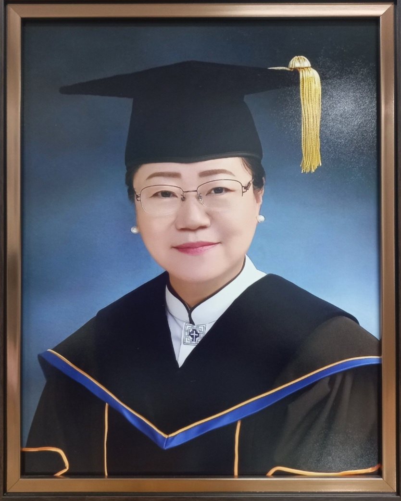

임마누엘신학학술연구원을 방문해 주신 여러분을 진심으로 환영합니다.
주님의 몸 된 교회와 세계 선교를 위해 남은 자들을 부르시고 훈련하시는 삼위일체 하나님의 은혜가 여러분의 삶 위에 늘 함께하시기를 기원합니다.
오늘날 우리는 영적인 분별력이 그 어느 때보다 절실한 시대를 살아가고 있습니다. 세상의 가치관이 교회를 흔들고 수많은 사조가 진리를 흐리려 할 때, 우리가 붙들어야 할 것은 오직 하나, 변함없는 하나님의 말씀뿐입니다. 임마누엘신학학술연구원은 성경의 절대적 권위와 웨스트민스터 신앙고백을 기초로 하는 개혁주의 신앙의 순수성을 파수하며, 이 어두운 시대에 바른 진리의 등불을 밝힐 사역자를 길러내기 위해 세워졌습니다.
저희 연구원은 단순히 머리로만 아는 신학에 머무는 것을 경계합니다. 신학은 강단 위의 이론이 아니라, 성도들의 삶을 치유하고 선교 현장을 변화시키는 생명력이기 때문입니다. 그렇기에 우리는 철저한 말씀 연구와 학술 활동을 통해 지성을 연마함과 동시에, 무릎으로 기도하며 주님의 성품을 닮아가는 영성 훈련을 가장 소중히 여깁니다. 이곳에서의 훈련은 지식의 축적을 넘어, 내 삶이 먼저 변화되고 하나님 앞에서의 소명을 확증하는 경건한 여정이 될 것입니다.
특별히 우리 연구원은 목회와 선교의 현장에서 즉시 영혼을 돌보고 교회를 세울 수 있는 ‘실천적 지혜를 갖춘 현장형 리더’를 키우는 데 집중하고 있습니다. 급변하는 세상 속에서도 주님의 선한 목자 정신을 잃지 않고, 낙심한 자를 위로하며 복음을 담대히 선포할 거룩한 도구들이 바로 이곳에서 준비될 것입니다.
사랑하는 동역자 여러분,하나님께서 마음에 심어주신 거룩한 부담감과 소명이 있으십니까? 하나님의 나라를 위해 인생을 던지겠다는 거룩한 열망이 있으십니까? 홀로 고민하지 마시고, '하나님이 우리와 함께 계시는' 임마누엘의 현장으로 오십시오.
여러분이 걷고자 하는 그 좁고도 영광스러운 길에 저희 임마누엘신학학술연구원이 든든한 동반자가 되어 드리겠습니다. 이곳에서 말씀으로 단련되고 기도로 깊어져, 흔들리지 않는 반석 위에 서는 기쁨을 누리시길 바랍니다.
주님의 부르심 앞에 순종함으로 나아오는 여러분 모두를 기쁨과 사랑으로 환영하며, 여러분의 앞길에 주님의 크신 평강과 능력이 늘 함께하시기를 간절히 축복합니다.
감사합니다.
권미경 박사